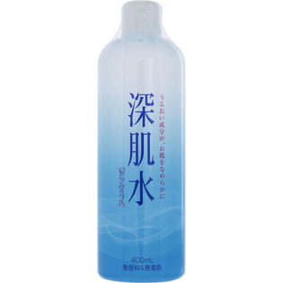

返回列表
产品名称：ＭＫ 深肌水

大関 ＭＫ 深肌水 ４００ｍｌ
メーカー 大関
JANコード 4901061475836
商品の特徴
乾燥しがちな全身にうるおいを補給して肌の水分バランスを整える全身ローションです。
スキンケア成分（カミツレエキス）配合で肌の潤いを保ちます。
無着色、無香料です。
成分・分量
【成分】
水、ＢＧ、グリセリン、エタノール、カミツレ花エキス、リンゴ果実エキス、チャ葉エキス、クエン酸Ｎａ、クエン酸、フェノキシエタノール、メチルパラベン
用法及び用量
【使用方法】
適量をとり、塗布してください。